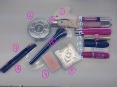

2014/1013Mon堀のこと。
最近あまり更新
できていなくてごめんなさい。
私にとってブログは
読んでいる方に私の事を
より知ってもらう機会だと思うし
この子のブログいつも長いなぁと
思う方も少なくないとは思いますが
初期から更新頻度と内容の濃さに
こだわってきたので
これからも続けていきたいです♪
よろしくお願いします
さてさて...
沢山の質問
ありがとうございました！
長いので是非、時間がある時に
小分けにして読んで下さい
これを見て少しでも何か
私の事を知っていただけたら
嬉しいなぁ☪
17歳ラストの更新
【食】
No1餃子
No2塩タン
No3カツオ
好きな食べ物
可愛くないんです(o_o)
お肉...特に牛肉、タン
魚介類...秋刀魚、お刺身、さざえ、
大あさり、貝柱、寒ブリ
野菜...さつまいも、かぼちゃ、
トマト、とうもろこし、長芋、栗
麺類...味噌バターラーメン、
ミートソースパスタ、そば
おやつ...梅、野菜チップス、枝豆、
饅頭、栗きんとん、わらび餅
お母さんの料理...栗ごはん、
五目ごはん、豚肉の梅しそ巻き、
きゃらぶき、天ぷら
フルーツ...梨、みかん、いよかん
名古屋名物大好き！
味噌煮込みうどん、味噌カツ
きしめん、手羽先、ひつまぶし...
あと冬は鍋を沢山食べます！
お茶はそば茶が大好きです
苦ければ苦いほど良し
〜質問返し〜
○好きなアイスはなんですか？
カップですか？棒ですか？
カップですか？棒ですか？
→チョコ系が好き♡♡
あとコーンよりカップ派です
ソフトクリームは家族で
お出掛けした時にお出掛け先で
ご当地のソフトクリームを
買って食べるのですが小さい頃から
必ずお父さんにされるのが
父「食べる？」私「うん」父「はい」
って言って私の鼻にソフトクリーム
をつけるの！笑
食べようとしたらベチャッだもん
お姉ちゃんにも時々される( ; _ ; )
○美容のために食べてる物とか
ありますか？
→野菜をなるべく食べるように
気をつけています！
あとお豆腐
【ジブリ】
小さい頃、体が弱くて
よく入退院を繰り返していた時に
病室で観ていたDVDがジブリ！
特に好きなジブリ作品は
魔女の宅急便
コクリコ坂から
千と千尋の神隠し
借りぐらしのアリエッティ
ハウルの動く城
となりのトトロ
猫の恩返し...
いつかジブリのお仕事に関わりたい
って幼い頃から思っていました
ほっこりする音楽
細かい描写の絵
美味しそうな食べ物
温かい人物
全部好き！
ずっと行きたいなって
思っているジブリの名所は
ジブリ博物館
ジブリ展覧会
サツキとメイの家
耳をすませばの舞台となった
団地や街巡り
魔女宅の舞台となった
ヨーロッパ巡りです(｡･ω･｡)
つじあやのさんの風になるを
初めとしたジブリのサントラも
よく聞きます♪
【学校】
〜質問返し〜
○学校ではよく喋る方？
→慣れたらよく喋ります！
あと友達の話を聞いてずーと
笑っています...笑
笑いのツボが浅いから大変。
あと人見知りだから慣れるまでは
自分から話しにいけません//_o\
○お弁当で1番好きなおかずはなに？
→焼きたらこ♪
お母さんのお弁当大好き！
おにぎりはいつも大きいサイズを
2個。
○堀ちゃんは学校の休み時間は
どんな感じて過ごしてるんかな〜？
知りたい。笑
→中学時代は友達と話していました！
○みおちゃんは文化祭での
思い出とかある？？
→高1の時しかないけど...
女子4人でブースを回って
お化け屋敷で大パニックに
なったり焼きそばを3人前とお団子と
うどんを食したり楽しかったな〜
○みおなちゃんは学生時代、
制服はセーラー服でしたか？
それとも、ブレザーでしたか？
また、アレンジとかはしてましたか？
→ブレザーです！
セーラー服憧れてたなぁ...
制服はカーディガンは
白色とピンク色を気分で交互に着て
マフラーはイーストボーイの
白ｘピンクでした。
髪型はストレートかハーフアップか
ポニーテール
体育祭はポニーだけど普段は
本当に適当です(o_o)
○速く走れるようになるには
どうすればいい？？
→毎日の基礎練習を大切にする。
あとは自分に負けない！
○好きな教科とか得意な
教科ってなに〜？
→家庭科と国語！
家庭科の調理実習が大好き♪
食物検定も取りました♪
国語は作文を書くのも好きでし
色んな短編集のお話しについて
考える授業も好きです！
【人】
憧れている方。
◎桐谷美玲さん
◎小松菜奈さん
◎新垣結衣さん
◎武井咲さん
◎YUIさん
ちなみに一度お会い
してみたい方は中島哲也さんと
ミラジョヴォヴィッチさん
小さい頃から人見知りな私。
時間はかかるけど仲良くなると
壁が無くなるタイプなんです
だから仲良くなるまでは
何考えてるか分からなかったとか
不思議だったとよく
言われるけど仲良くなったら
考えてることも全部分かるし
凄く単純だよねって
言われます...
幼稚園の時から年上の
お姉さんと一緒にいて
よく面倒みてもらったり
遊んでもらったりしていました！
私の周りは優しいお姉さんが多くて
相談に乗ってくれたりして
私も懐いていました♪♪
【音楽】
◎Tommyfebruary6さん
HOT CHOCOLAT
Lonely in Gorgeous
★CANDY POP IN LOVE★
Strawberry Cream Soda Pop
Love is forever
◎OneDirectionさん
One thing
Kiss you
◎YUIさん
LIFEが1番好き
◎miwaさん
◎FUNKYMONKEYBABYSさん
ALWAYS
おかえりなさい
大丈夫だよ
◎RIPSLYMEさん
黄昏サラウンド
◎ヒラリーダフさん
◎サザンオールスターズさん
◎女性アイドル全般
洋楽は家族の影響でよく聞きます
小さい頃から車で流れていて
今でも聞きます(๑•＿•๑)
【洋服】
◎THEATRE PRODUCTS
◎Lirybrown
◎EGOIST
◎American apparel
◎emoda
◎moussy
◎ZARA
◎sister
◎flower
...他古着(サンタモニカ、シカゴ、
フラミンゴ)
靴はスニーカーだと
Nikeやニューバランスが好き
足のサイズは23.5〜24cmと
意外と大きめです！
お姉ちゃんのお下がりもあります。
スニーカー類の上の左から2番目は
パリで買った物で特にお気に入り♡
お気に入りの小物
お姉ちゃんに貰ったクラッチバック達
買ったり貰ったりした帽子達
〜質問返し〜
○古着はどこで買ってるの〜？？
よく買うお店とかある？？
→古着の質問がとにかく多かった！
私は原宿と代官山かなぁ
あんまり東京詳しくなくて...
新宿とか池袋とか未知の世界。
よく行く古着屋さんはシカゴかな！
品揃えが多くて可愛いです
○部屋着はどんなのを着ていますか？
→毎シーズン、ジェラートピケです
肌触りが良いし季節に合わせて
作られているから快適なの！
今は夏用を着ています
寒くなってきたから冬用も欲しい〜
○今季おすすめのアイテムは？
→サイズ大きめのロングコート♪
あとはもふもふした物！
何に関してももふもふが可愛くて...
携帯ケースも、もふもふ。
リュックも、もふもふ。
○いつもイメージしてるモデル
さんとかいますか？
→青柳文子さん、桐谷美玲さん
鈴木えみさん、
【頭の中】
♡✰♡✰☪♡
マイペースだけど真面目に生きる
ひねくれた事とかずるい事が嫌い
食べて寝る事がとにかく好き♪
お母さんにも未央奈は
食べて寝る事しかしてない
って言われ続けてきました
美味しい物食べて
あったかいお風呂にはいって
ふっかふかのお布団で寝る
昼ご飯何？よるご飯何？が口癖。
でもやる時はやる。
考える時は考える。
ONとOFFをしっかり切り替える。
あと、妄想が大好き
本を読みながら頭の中で
シーンを勝手に妄想したり。
よくみんなに未央奈は妄想しすぎ
って言われちゃいます。
あとは笑う事も大好きです
ツボが異様に浅くて...
仕事中は真面目だけどそれ以外は
ずーと笑ってられる！
だからお笑い番組も好き(*^o^*)
将来は海外に住みたいっていうのが
小学生の時から姉と私の夢で。
ヨーロッパでのんびりしたいな！
沢山の犬に囲まれて
魔女の宅急便みたいな生活が理想〜
〜質問返し〜
○毎回堀ちゃんが書く文章
すごくうまくて感心してます。
何かコツとかあれば
えてもらいたいなー
→全然です>_<
ありがとうございます>_<
初めは思いのまま書いて
保存して少し経ってから
見直して書き直します！
見てもらうものだから初期から
ブログには数日かけてじっくり
書いています♪
○元気がないとき、
落ち込んでいるときどうやって
元気を出してますか？
→岐阜で親友に会って
家族とゆったり過ごして
お風呂に入ってテレビみて
沢山笑う(*^o^*)
あとは時間があればコメントを読む
そうすると自然と笑顔になれます
悩んでいる時は信頼している人に
相談するかな
○兄弟、姉妹だったら誰がほしい？
→優しいお兄ちゃんが欲しい！お姉ちゃんは既にいるから...笑
あと小さい子も大好きだから
妹や弟も沢山いたら楽しいだろうな〜
岐阜に帰ると親戚の子供達と
会うんだけどみんなすっごく可愛くて
膝の上に乗せてあげたり
おにごっこしたり抱っこしたり...
お姉ちゃん〜って来てくれる♡
○未央奈ちゃんみたいに
毎日笑顔でいられる秘訣は？
→う〜ん、ツボが浅いだけだよ〜笑
でも毎日を楽しむには自分の
好きな事をするとか趣味って大切かも
映画見たりお買い物したり
美味しい物食べたり！
○最近ハマっていることを
教えてください
→ニット帽集め
野菜を食べたり飲む事
◎将来の夢は？
→女優さん。
学生役も何を考えているか
分からないミステリアスな役も
思いっきり弾けた役も不気味な役も
何でもこなせる人になりたい！
あとは
動物愛護センターを設立する事。
保健所にいる動物や飼えなくなって
しまった動物を預かって
施設で育てたいっていう
夢はずっと変わっていません
【メイク】
流れ
化粧水、乳液をつける
かっさでマッサージをする
8のコンシーラーを目の下に塗る
JILLのアイシャドウの薄茶色を
まぶたに薄く塗る
ビューラーでまつげをあげる
マスカラを塗る
4のアイラインを目頭から細く
目尻までひく
3のアイブロウで眉毛をナチュラルに
平行になるように書く
7のチークを塗る
13の口紅を塗る
完成(*^_^*)
だいたい15分くらいです
下地は基本しません！
マスカラは上まつげのみ！

1.かっさ...通販
2.パウダー...JILLSTUART
3.アイブロウ...セザンヌ
(ナチュラルブラウン)
4.リキッドアイライン...K-パレット
(ブラウン)
5.チークブラシ...RMK
6.チーク...RMK
7.チーク...JILLSTUART
8.コンシーラー...K-パレット(03)
9.グロス...RMK(CL-01)
10.グロス...Dior
11.リップブラシ...薬局
12.リップ...LIPDress
13.口紅...イヴサンローラン(No14)
14.口紅...MAC(コスタシック)
15.リップクリーム...marks&web
16.リップクリーム...LipDress
〜写真には無い物〜
アイシャドウ...JILLSTUART
マスカラ...メイベリンボリューム
エクスプレスロケット01ブラック
下地...JILLSTUART(ピンクの
コントロールカラー)
〜質問返し〜
○メイクのこだわりありますか？
→出来るだけナチュラル！
でも頑張ってメイクしたのに
すっぴん？って聞かれると悲しい>_<
あとはリップはこだわります！
家にいる時も無色リップを塗り塗り。
○堀ちゃんはアイラインは
どういう風に引きますか？→目尻を少したらして引きます！
ラインの引き方は細めにサッと
目頭から♪ブラックよりブラウン。
○自撮りのコツとかあるの〜？
→初期から自撮りが苦手で
ファンの方にも下手だねって
言われてたのですが...
Camera360っていうアプリの
freshとsweetで撮ると
綺麗に撮れますよ♡
メンバーもよく使っています
上手くなるように日々研究！
○注目している化粧品は？
→まつげ美容液を友達の勧めで
買ってみました！まつげが
少しずつ長くなるんだって(^o^)
使ってみて良かったら紹介します！
オススメのリップとか口紅
化粧下地とかもしあったら
教えて下さい！
【ダイエット】
◎朝はしっかり食べる
◎お菓子が食べたい時は野菜チップス
◎パンより白米
◎19時以降は控える
◎豆腐、納豆、枝豆、フルーツを
食べる
◎休日はお買い物しながら沢山歩く
◎朝起きたら肩甲骨を回してほぐす
◎寝る時はメディキュット履く
◎可愛い人の画像を集める
(私の待ち受けは小松菜奈さんと
武井咲さんと桐谷美玲さんと
新垣結衣さんをコラージュした画像)
ですかね...
私、太りやすい体質なので
小麦類を摂りすぎないように
気をつけます
〜質問返し〜
○未央奈ちゃんめっちゃ
スタイルいいけど普段意識
してる食事とか運動とかってあるの？
→全っ然( ; _ ; )
食事は、私はとにかく沢山食べるから
沢山食べた次の日は控えます...
あとお腹空いたらフルーツとか
枝豆を食べる！
【髪】
小学1〜4 パッツンミディアム
5年生 センター分けロング
6年生 パッツン前下がりショート
中学1〜2 パッツンボブ
3年生 パッツンロング〜今に至る
シャンプーリンス...アロマシロップス
(イスタンブールの香り)
これは楽天市場で買いました♪
メイクさんにいつも髪の毛いい匂い
って褒められます。嬉しい
前髪の頼み方は「眉下ぱっつんで
毛先だけギザギザにお願いします」
って言って切ってもらいます
握手会で私の所に来てくれる
女の子、ぱっつん多い気がする...♡
〜質問返し〜
○ぱっつん以外しないの？
→興味はあります
センター分け久しぶりに
してみたいなって♪
でも今はぱっつん黒髪を継続します
伸ばしたらこんな感じかな〜
眉毛が情けないの。笑
○上手に髪の毛巻く
コツとかありますか？
→練習すれば上手くなると
思います(๑•＿•๑)
私もへたっぴ...
○未央奈はどんな髪型を
よくしますかー？
→お仕事ではストレート、ゆる巻き、ポニー
ツインあたりが多いかな！
私服の時は可愛いゴムとかリボンで
結んだりピン留めたり✡
○どうやったら未央奈ちゃん
みたいにきれいなストレートヘアに
なれますか？(>_<)
気を付けていることなど
教えてほしいです！！
→髪質が細くて柔らかいので
寝癖がつきやすくて大変です...
ちなみに髪質が外人さんみたい
ってSeventeenのメイクさんに
言われてそんなにふわふわなんだって
自分でも驚きました
確かにトリートメントに
行き始めてから髪が
柔らかくなった気がする...
太い髪質に憧れる
あとは染めた事が無いから
髪は痛みにくいです
ストレートアイロン...ツヤグラ
巻きアイロン...クレイツ
【スキンケア】
岐阜にいるときは
ずっとすっぴんだったので
東京に来てからメイクを
少しずつするようになって、
初めは肌荒れもしたしメイクが
嫌ですぐに落としていたけど
少しずつ肌も慣れました♡
化粧水と乳液とメイク落としは
なるべく変えずに同じ物を使用
◎化粧水...ハトムギ化粧水
コットンにひたひたに付けて
肌に馴染ませる
◎乳液...エルボHQブライトクリーム
◎メイク落とし...AHA
◎ボディクリーム...BODYshop
〜質問返し〜
○未央奈はほぼスッピンのとき
多いけどなんでそんなに
白くて肌綺麗なのー？
→お休みの日は出かける
としてもすっぴんが多いです！
肌を休ませる(O_O)
でも顔には日焼け止めスプレーを
たんまりとかけています。
あとトマトとかフルーツが
大好きだから沢山食べるよ〜
でもね、この夏ロケで
ちょっと日焼けした。笑
ウインク下手やわぁ...
○使ってるハンドクリームって
何ですか？
→BODYshopのグレープフルーツ
の香りのボディバターです
柑橘系♪
○未央奈ちゃんは爪の
お手入れしてますか？
もししていたら教えてください♡
→特にしてないです！
塗るとしても透明のジェルくらい。
【香】
香水...JILLSTUART
ルームミスト...ジェラートピケ
ヘアミスト...ジェラートピケ
匂いフェチです...
特に柑橘系の爽やかな香りが好き！
柔軟剤とか洗剤の匂いも♡
ランキングをつけるなら
1位 キンモクセイ
2位 柔軟剤
3位 ラベンダーかな
男性の香水の香りなんて握手会か
お父さんしか分からないから...
握手会で好きな香りだって
思ったらつい、いい香りですね
って言っちゃいます
あと私のお父さんが付けている
香水が本当に好きな香りなの！
男性に付けてもらいたい
香水No1ですね
【ドルチェアンドガッバーナの
ライトブルー】
迷われている方は是非（＾_＾）
おまけ
2期、家族、親友から
見た私を聞いてみました
初めて聞いたからこんなふうに
思われていたなんて恥ずかしい。
時間が無くて1期生の方以外です！
○伊藤かりん
「つかめない」
○鈴木絢音
「私のお姉ちゃん
なんでも話せて、一緒にいると
笑顔になれるそんな人です」
○新内眞衣
「岐阜県から来た天然少女。
ぼーっとしてるように見えるが、
内に秘めたる思いはメラメラしていて、
結構自分のことを研究している努力家。
最近では、不思議ちゃんキャラが
爆発的にハマり、その怪奇行動に
今後も目が離せない。」
○佐々木琴子
「言葉では表しにくい
時々なまる
二期生のこと考えてくれてると思う
O型！ってかんじ」
○渡辺みり愛
「堀未央奈は人見知りだけど、
仲良くなるにつれてテンションが
おかしくなります！だけどやる時は
やるし、OFFモードの時は本当に
OFFモードなので、OFFモードの時は
話しかけても素っ気ないです！
でもでも大好きなお姉ちゃんです(ヽ´ω`)」
○寺田蘭世
「堀どのはお世話焼いてくれたりして
ママ？！お姉ちゃんみたいな
ところもあるけど最近はうちよりも
幼い子みたいに騒いだりしてるの
よくみる気がする！
でも騒いでたりするほうが
みおならしい気もする！
んでもって、そのテンションも
なかなか好きだよ♡
んでもってんでもって
○えさをあたえる
よく食べてるからね（笑）
○オシャレさんなのでまめに
洋服をあたえましょう
○よく寝てる
この3つは堀を飼うための方法( ´` )」
○矢田里沙子
「古着大好き人間
第一印象との激しいギャップ
ちょっと独特な個性と
ガラスのハートを併せ持つ岐阜少女」
○山﨑怜奈
「似てないようで似てるような、
でもお互い認めない(笑)
仲はいいです（＾ω＾）」
○相楽伊織
「みおなは人見知りだけど、
伊織に話しかけてくれたり、
あとなんかいつも笑ってて、
いつもなんか食べてるイメージ！」
○伊藤純奈
「まず最初に。
最近会えなくて淋しいです。笑
未央奈はねー、メンバー愛が強い！
とくに純奈と日奈子の事が好きだよね？
ん？違う？(((o(*ﾟ▽ﾟ*)o)))笑
アンダーライブが始まった時に
メールをくれたりくだらないやり取りを
して癒されたり助かってるよ♡
〈説明書〉
・焼肉を与えましょう。
・ついでに純奈も与えましょう。笑
・定期的にお買い物に連れて
行きましょう。
・妄想には付き合ってあげましょう。
途中から未央奈はとってもご機嫌に
なるので話を無視しても気付きません。
・起こす時はしつこく起こしましょう。
なかなか起きません。
未央ちゃん攻略はこれで完璧なはず！」
○北野日奈子
返答なし。笑
日奈子体調早く治って〜(´；ω；｀)
○米徳京花
「真面目そうだけど一緒にいて
親しくなっていく内に、
すごい活発だったり、独自の趣味が
あることに気づく！一言で表したら、
「個性的な子」かな！
好きな物が結構お互い
似てるよね(๑・ .̫ ・๑) 笑」
○岐阜の友達M
中学からの親友でJと私と3人で
よく岐阜や東京で遊ぶ仲の1人。
大晦日とか夏祭りも毎回この3人！
「しっかりしとるところもあり、
たまに見せる天然もある
いつも笑ってるけど、でも相談とか
すると真剣に考えてくれて
いつも助けてくれる！」
○岐阜の友達J
中学からの親友でずっと一緒。
「じわじわおもしろい！
独特の分析力！
上手く伝えられない（笑）
とにかく未央の笑いのセンスが好き！」
○岐阜の友達N
幼稚園から仲良し。
「自由人でしっかりしているけど、
天然要素があってほのぼのしている。
見てて面白い人。」
○父
「表面と内面のギャップが面白い子」
○母
「癒し」
○姉
「自分も周りも笑えればそれが幸せな子」
でした。
ふむふむ
最後に...
乃木坂に入って素敵な事が沢山
ありました。
メイクもした事がなかった私が
美意識を持つようになった
沢山の人前に出る機会が
多いから色んな事が発信できる
夢も与えられる
ファンの方と支え合える
人見知りが少し治る
これからも色んな経験をして
チャレンジ精神と自分らしさを
大切にまっすぐ進んでいきたいです！
少しでも私に興味を
持ってくださった方が
この記事を読んで堀未央奈って
こんな子なんだと
思ってくれたら嬉しいなと思って
この記事を書きました！
読んでくださって
ありがとうございました
おやすみおな(ヽ´ω`)
2014/10/13 23:40
コメント(1311)
たのしいブログいつもありがとう♩♡
堀ちゃんのブログはだれにも真似できないし、
読みごたえがあっていつも
楽しみにしてるよ(*^_^*)
堀ちゃんに会えるまであと4日！
にこは大学1年で、札幌なんだけど
堀ちゃんと生駒ちゃんに会うために
バイトがんばったよ＼(^O^)／
早く会いたいーーっっ！
堀ちゃんのブログはだれにも真似できないし、
読みごたえがあっていつも
楽しみにしてるよ(*^_^*)
堀ちゃんに会えるまであと4日！
にこは大学1年で、札幌なんだけど
堀ちゃんと生駒ちゃんに会うために
バイトがんばったよ＼(^O^)／
早く会いたいーーっっ！
みおなの喋り方、どくとくよね！
あと、何かまだ秘めた力を感じる
オーラが最近、なんか自分なかで
気になる！
みおな卵みたい！
あと、何かまだ秘めた力を感じる
オーラが最近、なんか自分なかで
気になる！
みおな卵みたい！
こんばんは。ブログ楽しく読みました。ありがとう☆⌒（＊＾∇゜）v
堀ちゃんのブログはいつも丁寧なのに、僕のコメントは、いつも短めで申し訳ないです。
堀ちゃんみていると癒されます。いつもありがとう。
好きです☆☆
taku
堀ちゃんのブログはいつも丁寧なのに、僕のコメントは、いつも短めで申し訳ないです。
堀ちゃんみていると癒されます。いつもありがとう。
好きです☆☆
taku
堀ちゃんのことブログでいっぱい知れて嬉しい(((o(*ﾟ▽ﾟ*)o)))
そして安定の可愛さ///←
あーーもうホントに大好き♡\(//∇//)\
いつも癒しをありがとう(´ω｀*)
そして安定の可愛さ///←
あーーもうホントに大好き♡\(//∇//)\
いつも癒しをありがとう(´ω｀*)
ドルチェ&ガッバーナのライトブルーか(*´ω｀*)
覚えておいて損はなさそう＼(^o^)／
今回のブログで堀ちゃんのことまた知れた！
ありがとう！モバメやブログなどでいろいろな堀ちゃんを知ることができてほんとにうれしいです！
最近興味津々ですｗｗｗ
やっぱり俺は服とかのところが一番話せるかな～
靴とか帽子とか見ても握手会で見たことのあるのがちらほら・・・
流行のものも取り入れつつ、自分の芯のあるファッションもあって、とても魅力的に感じた♪
よく友達と話すんだけど、堀ちゃんは7割よりの3割だね！
意味わかんないと思うけど、とってもいいほめ言葉ですｗ
ルームミストもヘアミストもジェラピケなんだね！
じゃあ俺のロクシタンのアロマティークはなしだね・・・笑
でも俺も負けじと勧めます！
ロクシタンのアロマティーク！ｗｗｗｗｗｗ
あっ、そういえばモバメで君に届け見たって言ってたけど、
俺も昨日アニメの一期を見尽くしてました（笑）
とりあえず今日中にコメントしたかったので、
今日はこの辺で！
また何回もこの記事見ると思うから、気付いたことあったらコメントするね！
じゃああと数時間！17歳楽しんでください！
俺もあと一週間と数時間21歳を楽しみます。笑
ありがとう！モバメやブログなどでいろいろな堀ちゃんを知ることができてほんとにうれしいです！
最近興味津々ですｗｗｗ
やっぱり俺は服とかのところが一番話せるかな～
靴とか帽子とか見ても握手会で見たことのあるのがちらほら・・・
流行のものも取り入れつつ、自分の芯のあるファッションもあって、とても魅力的に感じた♪
よく友達と話すんだけど、堀ちゃんは7割よりの3割だね！
意味わかんないと思うけど、とってもいいほめ言葉ですｗ
ルームミストもヘアミストもジェラピケなんだね！
じゃあ俺のロクシタンのアロマティークはなしだね・・・笑
でも俺も負けじと勧めます！
ロクシタンのアロマティーク！ｗｗｗｗｗｗ
あっ、そういえばモバメで君に届け見たって言ってたけど、
俺も昨日アニメの一期を見尽くしてました（笑）
とりあえず今日中にコメントしたかったので、
今日はこの辺で！
また何回もこの記事見ると思うから、気付いたことあったらコメントするね！
じゃああと数時間！17歳楽しんでください！
俺もあと一週間と数時間21歳を楽しみます。笑
みおなちゃん♡
私は、みおなちゃんの２ｓ下の女子なので、今回のブログすごく参考になりました(´▽｀)メイクの事とかいろいろ♬♬♬
みおなちゃん女子力高すぎです(゜ロ゜;)自分まだまだだなって思いましたー(笑)
みおなちゃんに近づけるようにｶﾞﾝﾊﾞﾘﾏｽ(´V`)♪
私は、みおなちゃんの２ｓ下の女子なので、今回のブログすごく参考になりました(´▽｀)メイクの事とかいろいろ♬♬♬
みおなちゃん女子力高すぎです(゜ロ゜;)自分まだまだだなって思いましたー(笑)
みおなちゃんに近づけるようにｶﾞﾝﾊﾞﾘﾏｽ(´V`)♪
初コメです。
ぜひ耳をすませばの聖地に行ってほしいですね！
駅からかなり歩くけど、耳すまファンとしては最高の場所でしたね！
名古屋からすでに3回行ってます！
ぜひみおなも行ってみてね！
ぜひ耳をすませばの聖地に行ってほしいですね！
駅からかなり歩くけど、耳すまファンとしては最高の場所でしたね！
名古屋からすでに3回行ってます！
ぜひみおなも行ってみてね！
堀ちゃん
大好き♥︎
菜々の誕生日0516(5月16日)なんだけど…
来年祝ってくれたら嬉しい♡///
堀ちゃんのことこのBlogをみた時によく分かったしこれからもずっと堀ちゃん推し♡///
みなみも大好き♥︎
みなみおなが大好き♥︎
いつも元気を与えてくれてありがとう！
大好き♥︎
菜々の誕生日0516(5月16日)なんだけど…
来年祝ってくれたら嬉しい♡///
堀ちゃんのことこのBlogをみた時によく分かったしこれからもずっと堀ちゃん推し♡///
みなみも大好き♥︎
みなみおなが大好き♥︎
いつも元気を与えてくれてありがとう！
みおな、こんばんは
コメント遅くなってごめんね。
まぁみおなは俺のコメントなんて、
待って無いだろうけど…（涙）
みおなのブログの更新頻度が少なくなって
きちゃうのはしょうがないよ！
みおなも乃木坂の一員として、頑張ってる
もんね。
たまにでも、こうやって長めのブログ書いて
くれるから、全然気にしないよ！
テレビとかイベントとかで頑張ってるのは
分かってるしさ。
さて、俺のコメントもそこそこ長くなるかもっ
アイスのカップ派めっちゃ分かる！
俺もねアイスはカップの方が好きなんだぁ
ジブリの好きな作品、結構かぶってて
びっくりしたぁ(￣O￣;)
俺も俺の友達も「千と千尋の神隠し」とか
「となりのトトロ」はジブリと言われれば
って感じの作品って話をこの前してた〜
男だけど「魔女の宅急便」と「猫の恩返し」
も好きだったなぁ。
みおな、親戚の子供たちとよく遊ぶんだぁ
その子たちも優しいお姉さんがいて
嬉しいやろうね。
俺は妹が2人いて、俺が一番上やから、
やっぱりお兄ちゃんかお姉ちゃんが欲しいな。
みおなみたいなお姉ちゃんやったら
優しくて、面白くて、楽しいんやろうね。
最後に質問
みおなのオススメのストレス発散法ってある？
俺はあんまり確かなのが無くて困って
るんだぁ。
最初に書いた通り長くなっちゃって
ごめんねm(_ _)m
読みにくかったやろうけど、
このコメントも読んでくれてたら嬉しいな。
じゃ、また( *｀ω´)
コメント遅くなってごめんね。
まぁみおなは俺のコメントなんて、
待って無いだろうけど…（涙）
みおなのブログの更新頻度が少なくなって
きちゃうのはしょうがないよ！
みおなも乃木坂の一員として、頑張ってる
もんね。
たまにでも、こうやって長めのブログ書いて
くれるから、全然気にしないよ！
テレビとかイベントとかで頑張ってるのは
分かってるしさ。
さて、俺のコメントもそこそこ長くなるかもっ
アイスのカップ派めっちゃ分かる！
俺もねアイスはカップの方が好きなんだぁ
ジブリの好きな作品、結構かぶってて
びっくりしたぁ(￣O￣;)
俺も俺の友達も「千と千尋の神隠し」とか
「となりのトトロ」はジブリと言われれば
って感じの作品って話をこの前してた〜
男だけど「魔女の宅急便」と「猫の恩返し」
も好きだったなぁ。
みおな、親戚の子供たちとよく遊ぶんだぁ
その子たちも優しいお姉さんがいて
嬉しいやろうね。
俺は妹が2人いて、俺が一番上やから、
やっぱりお兄ちゃんかお姉ちゃんが欲しいな。
みおなみたいなお姉ちゃんやったら
優しくて、面白くて、楽しいんやろうね。
最後に質問
みおなのオススメのストレス発散法ってある？
俺はあんまり確かなのが無くて困って
るんだぁ。
最初に書いた通り長くなっちゃって
ごめんねm(_ _)m
読みにくかったやろうけど、
このコメントも読んでくれてたら嬉しいな。
じゃ、また( *｀ω´)
今日の内容、とっても濃くて、みおなの事たくさん知れて、改めて頑張って欲しいって思った^ ^
おれのみおなのイメージは
すこし変わってるけど、またそこがいい( ´ ▽ ` )
特にみおなの声が好き♪( ´θ｀)ノ
じゃあ、勉強してきまーす
おれのみおなのイメージは
すこし変わってるけど、またそこがいい( ´ ▽ ` )
特にみおなの声が好き♪( ´θ｀)ノ
じゃあ、勉強してきまーす
僕のみおちゃんに対する第一印象は物静かな美少女というものでした。
今では随分印象も変わりましたが (笑)
今回のブログで堀未央奈という少女のことがかなり知ることができました。
人見知りだけど慣れるとよく喋るというところは僕もそんなところがあります。
みおちゃん、セブンティーン最後の夜ですが色々あったセブンティーンでしたね。
エイティーンの1年もみおちゃんにとっていい1年になるといいですね。
僕にとって堀未央奈という少女を知って推しになったことでどれだけ心を慰められたかしれません。
みおちゃんが乃木坂46のメンバーになってくれたことにほんとうに感謝しています。
それではおやすみおな
今では随分印象も変わりましたが (笑)
今回のブログで堀未央奈という少女のことがかなり知ることができました。
人見知りだけど慣れるとよく喋るというところは僕もそんなところがあります。
みおちゃん、セブンティーン最後の夜ですが色々あったセブンティーンでしたね。
エイティーンの1年もみおちゃんにとっていい1年になるといいですね。
僕にとって堀未央奈という少女を知って推しになったことでどれだけ心を慰められたかしれません。
みおちゃんが乃木坂46のメンバーになってくれたことにほんとうに感謝しています。
それではおやすみおな
掘ちゃん♪
ジブリいいですよね♪
自分は猫の恩返し 1番好きっす( ^ω^ )
掘ちゃんのブログは読んでて面白いです！
これからもお仕事がんばってください！！
堀ちゃんの内に秘めた情熱が大好き！
いつも内容濃いブログありがとう！
いつも楽しみにしてるよー！
笑ってるみおなが大好きー
俺も堀ちゃんみたいに努力しよう!!
いつも内容濃いブログありがとう！
いつも楽しみにしてるよー！
笑ってるみおなが大好きー
俺も堀ちゃんみたいに努力しよう!!
みおな〜｡ﾟ(ﾟ＾ｪ＾ﾟ)ﾟ｡ ♡
この記事ほんと最高すぎる！ありがとう！
みおなの雰囲気だいすき ♡
もちろん全てすきだけど（笑）
同い年なんやけどね、
ほんまに尊敬します ！！
これからも推すよ〜 ☆ ☆
この記事ほんと最高すぎる！ありがとう！
みおなの雰囲気だいすき ♡
もちろん全てすきだけど（笑）
同い年なんやけどね、
ほんまに尊敬します ！！
これからも推すよ〜 ☆ ☆
大好き！
みおな
みおなのことが
さらに知れてよかったぜ
おもしろすぎたぜ
みおなかわいいよ
ふむふむ。
ホラー映画大好き少女は
こういう子なんだね
みおなちゃんこんばんは♪
純奈ちゃんのコメントの
「途中から未央奈はとってもご機嫌に
なるので話を無視しても気付きません。」
想像したらおかしくて笑っちゃった(笑)
ホラー映画大好き少女は
こういう子なんだね
みおなちゃんこんばんは♪
純奈ちゃんのコメントの
「途中から未央奈はとってもご機嫌に
なるので話を無視しても気付きません。」
想像したらおかしくて笑っちゃった(笑)
堀ちゃんっ♡
私は堀ちゃんが何歳になろうと
おばぁちゃんになろうと
ずーっと、ずーっと大好きです＞＜
死ぬまでずっとファンです!笑
堀ちゃんに出逢えて良かった✨
これからも皆を笑顔にして下さい（≧∇≦）
私は堀ちゃんが何歳になろうと
おばぁちゃんになろうと
ずーっと、ずーっと大好きです＞＜
死ぬまでずっとファンです!笑
堀ちゃんに出逢えて良かった✨
これからも皆を笑顔にして下さい（≧∇≦）
ブログお疲れさま！
俺も未央奈の活躍してる姿を見て元気をもらってるよ！そして仕事頑張れる。
これからも未央奈のことを応援させてください！
俺も未央奈の活躍してる姿を見て元気をもらってるよ！そして仕事頑張れる。
これからも未央奈のことを応援させてください！
わお！未央奈久しぶり！
未央奈について改めてよく知れたわ！
初めて知ったこともたくさんある！
握手会とかを通してこれからも未央奈のことを応援していくからよろしくねヾ(＠⌒ー⌒＠)ノ
今日のブログは永久保存版やね（笑）
(アー･ω･メン)よりヾ(＠⌒ー⌒＠)ノ
未央奈について改めてよく知れたわ！
初めて知ったこともたくさんある！
握手会とかを通してこれからも未央奈のことを応援していくからよろしくねヾ(＠⌒ー⌒＠)ノ
今日のブログは永久保存版やね（笑）
(アー･ω･メン)よりヾ(＠⌒ー⌒＠)ノ
みおなちゃーん( ु ›ω‹ ) ु
まずは、長文ありがとねっ
NEW ERAの帽子、みおなと同じピンクのみつけて、買ったよ！！！
最近はカジュアル系の服を着てるよ。
11月2日の横浜には行くからね～ｗ
わたあめろんって言えばわかるかな？ｗわかんないよね……
でもみおなと会えるだけで幸せだからこれからも応援してくし、
頑張ってねっ！！
それと、お誕生日おめでとう(○>Å<)
まずは、長文ありがとねっ
NEW ERAの帽子、みおなと同じピンクのみつけて、買ったよ！！！
最近はカジュアル系の服を着てるよ。
11月2日の横浜には行くからね～ｗ
わたあめろんって言えばわかるかな？ｗわかんないよね……
でもみおなと会えるだけで幸せだからこれからも応援してくし、
頑張ってねっ！！
それと、お誕生日おめでとう(○>Å<)
こんばんは
ブログ読了しました。内容本当に盛りだくさん！
これから少しずつ読み返しますね。
未央奈ちゃんのブログは文章がとても読みやすく、内容が充実していて僕はいつも楽しみにしています。
今回のブログも未央奈ちゃんのことをもっと知ることができてとても嬉しい。こういうブログを書いてくれる未央奈ちゃんの心が僕は大好きです(^^)
そして、お誕生日おめでとうございます！
ついに18才になりましたね。
18才の一年間が未央奈ちゃんにとって素敵な、そして飛躍の一年になることをファンとして願っています。
本当におめでとう！
ブログ読了しました。内容本当に盛りだくさん！
これから少しずつ読み返しますね。
未央奈ちゃんのブログは文章がとても読みやすく、内容が充実していて僕はいつも楽しみにしています。
今回のブログも未央奈ちゃんのことをもっと知ることができてとても嬉しい。こういうブログを書いてくれる未央奈ちゃんの心が僕は大好きです(^^)
そして、お誕生日おめでとうございます！
ついに18才になりましたね。
18才の一年間が未央奈ちゃんにとって素敵な、そして飛躍の一年になることをファンとして願っています。
本当におめでとう！
ハイテンションっていうスプリッター映画が面白いらしいよwww
堀ちゃんお誕生日おめでとう
これからも一年堀ちゃんにとって躍進出来る良き一年でありますように
がんばれー
これからも一年堀ちゃんにとって躍進出来る良き一年でありますように
がんばれー
堀ちゃん、どうもです。
今日のブログはめっちゃ長いね。
堀ちゃんの全てがつまってる感じやね。
あとでもう一度しっかり読むね。
もうすぐおめでたい時間やね。
ではでは、またコメントしますね。
今日のブログはめっちゃ長いね。
堀ちゃんの全てがつまってる感じやね。
あとでもう一度しっかり読むね。
もうすぐおめでたい時間やね。
ではでは、またコメントしますね。
miwaの曲で何がすきですかー？♪
みおみおみおっぴーʕº̫͡ºʔ
堀ちゃん超可愛くて超可愛すぎて超可愛すぎながら超可愛すぎるのに超可愛すぎるくらい超清楚すぎ ＾ω＾
＾ω＾
堀ちゃんブログ更新は堀ちゃんのペースで大丈夫ですよ 内容はいつも濃いですよね
内容はいつも濃いですよね
 堀ちゃん早いもので17歳最後の日ですね明日18歳です
堀ちゃん早いもので17歳最後の日ですね明日18歳です
って制服姿の堀ちゃん超可愛すぎ

堀ちゃんの好きな食べ物美味しそう
 秋の食べ物って美味しいですよねってお母さんの料理大好きな堀ちゃん超可愛すぎで名古屋飯とか美味しそうですね岐阜のお鍋っておいしそう
秋の食べ物って美味しいですよねってお母さんの料理大好きな堀ちゃん超可愛すぎで名古屋飯とか美味しそうですね岐阜のお鍋っておいしそう
セーラー服の堀ちゃん超可愛すぎ
堀ちゃんジブリ作品本当に大好きですよね 猫の恩返し面白いですよねジブリ作品って何度見ても面白いし昔の作品でも色あせないというか何度見ても新鮮味がありますよね堀ちゃんのジブリ愛すごくてジブリ巡りできるといいですね
猫の恩返し面白いですよねジブリ作品って何度見ても面白いし昔の作品でも色あせないというか何度見ても新鮮味がありますよね堀ちゃんのジブリ愛すごくてジブリ巡りできるといいですね
堀ちゃんの質問返し面白くて焼きそば3つはすごくてさすがですねって制服姿確実に超可愛すぎる
白黒の堀ちゃん超可愛すぎ
堀ちゃんのあこがれの女性綺麗な方たちですねミラジョボビッチさんに会えたらものすごいですね堀ちゃんの人見知りは魅力の一つですよ堀ちゃんは真摯で真剣な感じがするからお友達になったら親友になるタイプですね堀ちゃん小さいころ年上のお姉さんいっぱいいたんですね妹みたいな感じで友達だったのかもですね
堀ちゃん洋楽好きですよね好きな海外アーティストさん来日すると同じ東京にいるって思うと興奮しますよね
って眼鏡の堀ちゃん超可愛すぎ
堀ちゃんの靴コレクションみんなオシャレで超可愛いですね
 お姉さんと靴同じくらいなんですねパリの靴ってなんかいいですね
お姉さんと靴同じくらいなんですねパリの靴ってなんかいいですね
小物類もオシャレで堀ちゃんのお姉さんオシャレですよね帽子も超可愛くて堀ちゃん確実に似合うです
堀ちゃん原宿好きですよね原宿って聞くとななみんの偶然ラフォーレいまだに思い出します

って部屋着の堀ちゃん超可愛すぎる
サイドポニーからちゅーな堀ちゃん超可愛すぎ
堀ちゃんは確かに真面目で真っ直ぐですよねってお母さんに言われちゃったの超可愛すぎる御飯大好き堀ちゃん超可愛すぎででもちゃんと堀ちゃんってお手伝いするんですよね堀ちゃんの妄想超可愛すぎて想像力豊かそうです脳の中で妄想した景色にシッカリ背景の色とかもついていそうです堀ちゃん笑いのツボか浅くてすごい面白いお笑い番組見たらずっと笑っていそうです堀ちゃんの笑顔大好きすぎる堀ちゃんヨーロッパの夢果たせるといいですねワンちゃんに囲まれて過ごすの超羨ましい 魔女宅風な生活でワンちゃんに囲まれたらワンちゃんにジジってつけたりして
魔女宅風な生活でワンちゃんに囲まれたらワンちゃんにジジってつけたりして
ってさゆりんみなみちゃんりなちゃんとの画像超可愛すぎ
りなちゃんの気合はさすがですね
堀ちゃんの質問返し面白くて確かに趣味って大切ですよね動物愛護センターの設立の夢堀ちゃんえらいです 昔よりはましになったけど1つでも多く救う事が出来るのいいですね
昔よりはましになったけど1つでも多く救う事が出来るのいいですね

動物のドイツの仕組みって愛護がしっかりしていてすごいんですよ
画像加工上手な堀ちゃん超可愛すぎ
堀ちゃんのメイクの仕方女の子のお手本になるですよって15分はすごい速いですね 堀ちゃんの顔メイクした顔もすっぴんも大好きですよ
堀ちゃんの顔メイクした顔もすっぴんも大好きですよ
堀ちゃんメイク道具さすが女の子ですね
つるつるぷるぷるの堀ちゃん超可愛すぎて質問返しのすっぴんのは堀ちゃんのすっぴん超綺麗だからですよ
ってクマ食べている堀ちゃん超可愛すぎ
堀ちゃん常にダイエットに気を付けているんですねって堀ちゃんって太りやすい体質なんですねプロ意識高いですね
堀ちゃんぱっつん歴すごい長いんですね一番短い時代ボブなんですね陸上時代の前に言っていた真っ黒の堀ちゃん？確実の超可愛すぎ
ってドぱっつん堀ちゃん超可愛すぎる
メイクさんにいい匂いってほめてもらえてよかったですね堀ちゃんのぎざぎざ前髪超可愛すぎですよ
質問返し面白くてにっと帽堀ちゃん超可愛すぎ
堀ちゃんの眉毛超可愛すぎだから絶対大丈夫ですよ
虫歯のポーズストレート堀ちゃん超可愛すぎ
堀ちゃん肌荒れしなくなってきたんですね東京のお水も慣れてきたかなスキンケア道具いっぱい持っていてさすが女の子ですねお手本にする女の子いっぱいいそうです
ウィンクの堀ちゃん超可愛すぎ
2つ結びな堀ちゃん超可愛すぎ
堀ちゃんの香水とかオシャレで匂いフェチな堀ちゃん超可愛すぎってお父さんの香水の香り好きなんですねって堀ちゃん香水の名前載せたらみんな同じ香り漂わせてきたりして香りで堀ちゃんファンとかわかってきたりして
メンバーとご家族と親友の皆の分析面白すぎる堀ちゃん年下の子とか特にお世話するの好きそうですメンバーやお父さんんもギャップがあるって言っているから相当ギャップがありそう人を笑顔にするいいギャップですね
堀ちゃん本当に乃木坂に入る事が出来てよかったですね演技のお仕事や歌のお仕事撮影やいろんなこと経験して楽しいこともつらいこともあると思うけど芸能活動頑張ってくださいね
改めて堀ちゃんの趣味とかいろんなことを見る事が出来て面白かったですよ
手書きメッセージ堀ちゃん超可愛すぎて字も上手です

堀ちゃんブログ更新は堀ちゃんのペースで大丈夫ですよ
って制服姿の堀ちゃん超可愛すぎ
堀ちゃんの好きな食べ物美味しそう
セーラー服の堀ちゃん超可愛すぎ
堀ちゃんジブリ作品本当に大好きですよね
堀ちゃんの質問返し面白くて焼きそば3つはすごくてさすがですねって制服姿確実に超可愛すぎる
白黒の堀ちゃん超可愛すぎ
堀ちゃんのあこがれの女性綺麗な方たちですね
堀ちゃん洋楽好きですよね
って眼鏡の堀ちゃん超可愛すぎ
堀ちゃんの靴コレクションみんなオシャレで超可愛いですね
小物類もオシャレで堀ちゃんのお姉さんオシャレですよね
堀ちゃん原宿好きですよね原宿って聞くとななみんの偶然ラフォーレいまだに思い出します
って部屋着の堀ちゃん超可愛すぎる
サイドポニーからちゅーな堀ちゃん超可愛すぎ
堀ちゃんは確かに真面目で真っ直ぐですよね
ってさゆりんみなみちゃんりなちゃんとの画像超可愛すぎ
りなちゃんの気合はさすがですね
堀ちゃんの質問返し面白くて確かに趣味って大切ですよね
動物のドイツの仕組みって愛護がしっかりしていてすごいんですよ
画像加工上手な堀ちゃん超可愛すぎ
堀ちゃんのメイクの仕方女の子のお手本になるですよ
堀ちゃんメイク道具さすが女の子ですね
つるつるぷるぷるの堀ちゃん超可愛すぎて質問返しのすっぴんのは堀ちゃんのすっぴん超綺麗だからですよ
ってクマ食べている堀ちゃん超可愛すぎ
堀ちゃん常にダイエットに気を付けているんですね
堀ちゃんぱっつん歴すごい長いんですね
ってドぱっつん堀ちゃん超可愛すぎる
メイクさんにいい匂いってほめてもらえてよかったですね
質問返し面白くてにっと帽堀ちゃん超可愛すぎ
堀ちゃんの眉毛超可愛すぎだから絶対大丈夫ですよ
虫歯のポーズストレート堀ちゃん超可愛すぎ
堀ちゃん肌荒れしなくなってきたんですね
ウィンクの堀ちゃん超可愛すぎ
2つ結びな堀ちゃん超可愛すぎ
堀ちゃんの香水とかオシャレで匂いフェチな堀ちゃん超可愛すぎ
メンバーとご家族と親友の皆の分析面白すぎる
堀ちゃん本当に乃木坂に入る事が出来てよかったですね
改めて堀ちゃんの趣味とかいろんなことを見る事が出来て面白かったですよ
手書きメッセージ堀ちゃん超可愛すぎて字も上手です
みおなぁぁぁぁ笑
すごい丁寧なブログですね。見ていてかなり面白いです。ぜひとも脳内コレクションに入れさせてください。
いつも楽しみにしています。
今度もよろ思想家ー
すごい丁寧なブログですね。見ていてかなり面白いです。ぜひとも脳内コレクションに入れさせてください。
いつも楽しみにしています。
今度もよろ思想家ー
これからもずっと応援します！
頑張ってね♪(^o^)♪
頑張ってね♪(^o^)♪
明日はいよいよ誕生日ですね☆
堀ちゃんも18歳かぁ。
俺にも、そんな時があったっけ。
あまりにも昔すぎて忘れそうだ。
18日の握手会、第三部にて参戦します！
ではでは。
おやすみなさいませ。。。
(( _ _ ))
堀ちゃんも18歳かぁ。
俺にも、そんな時があったっけ。
あまりにも昔すぎて忘れそうだ。
18日の握手会、第三部にて参戦します！
ではでは。
おやすみなさいませ。。。
(( _ _ ))
こんばんわ〜
いつも凄い長いけど、このブログは力作ですね！
すごい熱意だし読んだらほんと詳しくなれて、少しだけ仲良くなれた気もしたよ♪(๑ᴖ◡ᴖ๑)♪
特に僕が気になったのは好きな食べ物かな〜
食い道楽なので笑
きゃらぶきとか嫌いじゃないけど必要としてないもん俺( ◞˟૩˟)◞
これからもブログ楽しみにしてますね〜
いつも凄い長いけど、このブログは力作ですね！
すごい熱意だし読んだらほんと詳しくなれて、少しだけ仲良くなれた気もしたよ♪(๑ᴖ◡ᴖ๑)♪
特に僕が気になったのは好きな食べ物かな〜
食い道楽なので笑
きゃらぶきとか嫌いじゃないけど必要としてないもん俺( ◞˟૩˟)◞
これからもブログ楽しみにしてますね〜
サービス精神がすごい
みおな～♡
写真可愛いよ～(*/□＼*)
もっとみおなのこと好きになっちゃう(笑)
唇つやぷるうらやましい♡
その画像の文字は何のアプリなの？
加工オシャレで可愛い( ˙ω˙ )
あ、あと、前髪ないの可愛い！♡
こちらこそ、これからも
よろしくねo(*･o･*)o
うーん、話飛び飛び(笑)
接続詞を上手く使いこなせない、
それがぷぅかくおりてぃー┗(^o^ )┓<33笑
写真可愛いよ～(*/□＼*)
もっとみおなのこと好きになっちゃう(笑)
唇つやぷるうらやましい♡
その画像の文字は何のアプリなの？
加工オシャレで可愛い( ˙ω˙ )
あ、あと、前髪ないの可愛い！♡
こちらこそ、これからも
よろしくねo(*･o･*)o
うーん、話飛び飛び(笑)
接続詞を上手く使いこなせない、
それがぷぅかくおりてぃー┗(^o^ )┓<33笑
今回のブログ凄いね(^_^)
めっちゃ長い‼︎
読むのに少し疲れた(^^)
でも今回のブログで堀ちゃんの事をもっと詳しく知る事が出来ました（≧∇≦）
実は最近堀ちゃんの事を推すようになりました。
堀ちゃんはみんなから愛されているんだね(*^_^*)
今週の18日の握手会堀ちゃんのレーンに行きます^_^
堀ちゃんと握手初めてで緊張する〜〜
いろいろ話題考えとくね(^o^)/
俺も人見知りだけど、この握手会でお互い打ち解けあえたらいいなと思っています。
自己紹介しようかなと思っています。
とにかく凄く楽しみにしているね^_^
富士登山登頂おめでとう*\(^o^)/*
本当に凄いよ‼︎
よく頑張ったね^_^
それからちょっと早いけど堀ちゃん誕生日おめでとう*\(^o^)/*
堀ちゃんの笑顔に元気もらえます。
これからもその笑顔たくさん見せてね(^_^)
また握手会で、お祝いさせてもらうね(*^^*)
めっちゃ長い‼︎
読むのに少し疲れた(^^)
でも今回のブログで堀ちゃんの事をもっと詳しく知る事が出来ました（≧∇≦）
実は最近堀ちゃんの事を推すようになりました。
堀ちゃんはみんなから愛されているんだね(*^_^*)
今週の18日の握手会堀ちゃんのレーンに行きます^_^
堀ちゃんと握手初めてで緊張する〜〜
いろいろ話題考えとくね(^o^)/
俺も人見知りだけど、この握手会でお互い打ち解けあえたらいいなと思っています。
自己紹介しようかなと思っています。
とにかく凄く楽しみにしているね^_^
富士登山登頂おめでとう*\(^o^)/*
本当に凄いよ‼︎
よく頑張ったね^_^
それからちょっと早いけど堀ちゃん誕生日おめでとう*\(^o^)/*
堀ちゃんの笑顔に元気もらえます。
これからもその笑顔たくさん見せてね(^_^)
また握手会で、お祝いさせてもらうね(*^^*)
これだけの文を書けるのは素直に凄いと思う
タイトルどおりの内容だね、内容盛りだくさん！
長文だね！！
猫の恩返しわたしもだいすき～
猫の恩返しわたしもだいすき～
みおなんだいすき！また握手会行きます!!受験終わったら…
忙しい中で丁寧にブログを書いてくださって、ありがとうございます！
いつも楽しく読ませて頂いています(^-^)♪
未央奈ちゃんのおもしろいところ好きです(^^)
これからも応援しています！
いつも楽しく読ませて頂いています(^-^)♪
未央奈ちゃんのおもしろいところ好きです(^^)
これからも応援しています！
コメントを読みました、２期生のコメント良かったわ。日奈子のコメントが無かったのがちょっと残念かな！ あと少しで日付が変わりますが１７歳最後の夜をたのしみおな！ 未央奈にとって明日が良き日になりますように。 おやすみおな！！！
みおなちゃん！ありがとう♡
最近みおなちゃんを気になり始めた私にはめっちゃ嬉しい内容でした＼(^o^)／
みおなちゃん可愛くてホンマ憧れます♡
最近みおなちゃんを気になり始めた私にはめっちゃ嬉しい内容でした＼(^o^)／
みおなちゃん可愛くてホンマ憧れます♡
ブログ長い！笑
けどたくさんみおなのことが知れて、いと満足です。笑
僕は大学4年なんだけど、17歳のときこんなに自分のこと考えてなかったな〜。自分ってよく分からないけどアイドルは自分を売らないといけないから大変だよね。尊敬するよ！
妹がみおなと同い年なんだけど、こんなに頑張ってる子がいるんだよって教えてあげたい！(^ ^)
これからも応援してます！頑張れp(^_^)q
こんばんは。
ご自分で認められてましたが、
長っ(笑)。
堀さんの性格ですかね。
ところで、
富士登山の事は？
なーんてね。
富士登山お疲れ様でした。
最初は辛いですよね。
私は中、高、大の学生時代
運動系は中学2年の1年しかしたこと無かったので、
初めて登ったときは辛かったです。
堀さんは陸上部だったそうですけど、
登山はまた違うかもしれませんね。
そうそう、
万歩計は誤作動だったみたいですが、
私が今年、全く同じコースを2度登った時の記録を確認しましたら、
登りは平均9,000歩程度でした。
私の方が身長が高い分歩幅も大きいはず、
且つ途中走ったりもしたので、
堀さん達は1.5～2倍位の歩数ですかね。
ヒット祈願ご苦労様でした。
ご自分で認められてましたが、
長っ(笑)。
堀さんの性格ですかね。
ところで、
富士登山の事は？
なーんてね。
富士登山お疲れ様でした。
最初は辛いですよね。
私は中、高、大の学生時代
運動系は中学2年の1年しかしたこと無かったので、
初めて登ったときは辛かったです。
堀さんは陸上部だったそうですけど、
登山はまた違うかもしれませんね。
そうそう、
万歩計は誤作動だったみたいですが、
私が今年、全く同じコースを2度登った時の記録を確認しましたら、
登りは平均9,000歩程度でした。
私の方が身長が高い分歩幅も大きいはず、
且つ途中走ったりもしたので、
堀さん達は1.5～2倍位の歩数ですかね。
ヒット祈願ご苦労様でした。
みおなちゃんの好きな食べ物、僕もほとんど好きだよ 饅頭はあますぎて苦手
柑橘系の爽やかな香りも好きだよ
ドルチェアンドガッバーナめもれー
＼(^o^)／
柑橘系の爽やかな香りも好きだよ
ドルチェアンドガッバーナめもれー
＼(^o^)／
未央奈可愛い(^_-)
こんばんは(^_^)
やっとブログ全部読み終わったよ(^_^)
なんか達成感あるね!(^^)!
俺の未央奈の印象は、最初は真面目な子かなあと思ってたんだけど、今は、だいぶ不思議で面白い子だなあって感じかな(☆｡☆)
じゃあおやすみおな(-_-)zzz
バイバイ(@_@)
こんばんは(^_^)
やっとブログ全部読み終わったよ(^_^)
なんか達成感あるね!(^^)!
俺の未央奈の印象は、最初は真面目な子かなあと思ってたんだけど、今は、だいぶ不思議で面白い子だなあって感じかな(☆｡☆)
じゃあおやすみおな(-_-)zzz
バイバイ(@_@)
最近知ってファンになったので、まだあまり知らなかったところで今回のブログは嬉しかったです！
お疲れ様☻
全部全部読んだよ〜♩
面白かった（＾Ｏ＾）
またこういうブログ待ってます♡
お仕事頑張ってくださいね！
全部全部読んだよ〜♩
面白かった（＾Ｏ＾）
またこういうブログ待ってます♡
お仕事頑張ってくださいね！


明日誕生日だね！♡
うちも同じ10月うまれなのー(*≧∀≦)
みおなちゃんほんとにかわいい♡
いっぱいブログ書いてくれてありがとう！！
質問.*･ﾟ .ﾟ･*.
最近はやってることってなんですかー？